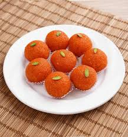

Home
Motichoor ladoo

What's this?
In the Hindi language, the word "Moti" means pearl and Choor or Chur means to crush or crumble. Literally translated to crumbled pearls. The term laddu or ladoo refers to sweetened round balls.
Ingredients:
- Chickpea flour (Besan)
- Sugar
- Ghee/oil
- saffron
- Cardamom
- food coloring (optional)
Recipe:
- Prepare sugar syrup with a few saffron threads and water.
- Make a smooth flowing batter of the gram flour/besan, crushed saffron and water.
- Take a large spoon of the besan batter and pour it on perforated ladle/spoon above medium-hot oil/ghee and fry droplets of gramflour/besan (moti/boondi) until golden.
- Collect the fried boondi and drop directly into sugar syrup.
- Shape the soaked boondi into a ladoo with your hands and VOILA ! sweet and tasty motichoor ladoo is done, ENJOY !!